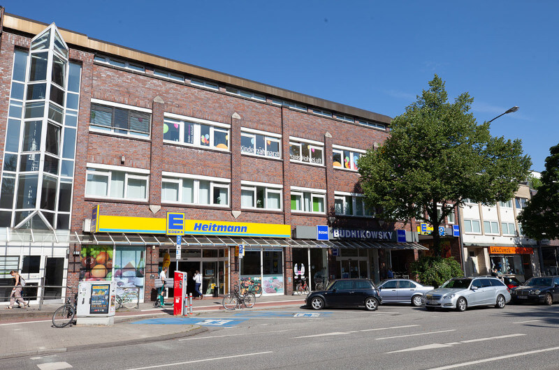

Anfahrt
Kinderzahnarztpraxis HoheLuft, Hoheluftchaussee 52, 20253 Hamburg

Mit Bus und Bahn
- U-Bahn U3 bis Haltestelle Hoheluftbrücke
- Busse 5, 20, 25 und X35 bis Eppendorfer Weg (Ost)
Mit dem Auto
- Parkplätze in der Hoheluftchaussee
- Parkdeck im Innenhof
- Parkhaus Falkenried
Sie erkennen uns an den bunten Fenstern mit der Aufschrift „Kinderzahnarzt“.
Sprechzeiten
| Montag – Donnerstag | 9–13 Uhr 14–17 Uhr |
| Freitag | 9–13 Uhr |
| Samstag, Sonntag | geschlossen |
Kontakt
Telefon: 040 40 11 321 0
mail@kinderzahnarztpraxis-hoheluft.de
Barrierefreiheit: Sprechen Sie uns gern an, wir helfen weiter.